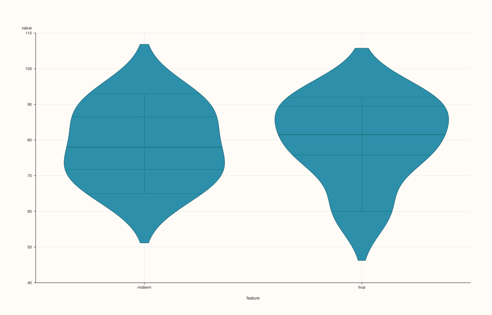
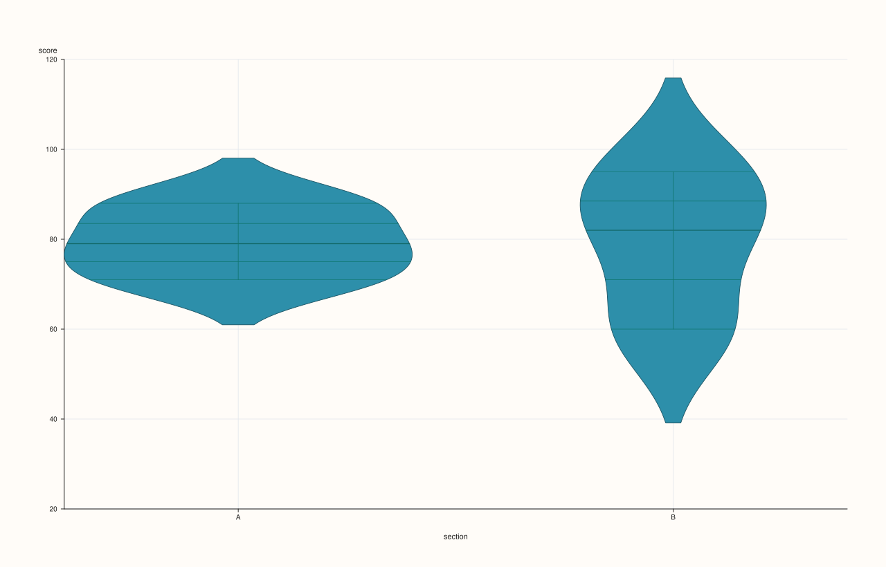
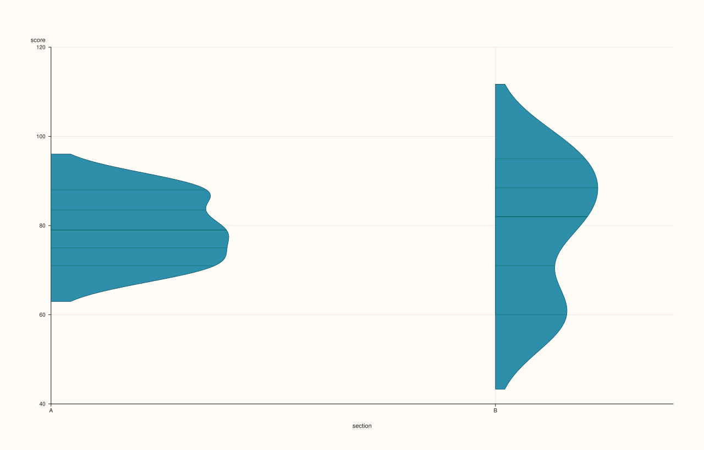

DataFramePlotAccessor::violin¶
Back to DataFramePlotAccessor API Reference
Signatures¶
DataFramePlotAccessor::violin(pluss::msharp::RangeView::Of<std::string_view> features = {}) const -> pluss::pl::Studio
DataFramePlotAccessor::violin(pluss::msharp::RangeView::Of<std::string_view> features,
const ViolinPlotOptions& options) const -> pluss::pl::Studio
DataFramePlotAccessor::violin(std::initializer_list<std::string_view> features) const -> pluss::pl::Studio
DataFramePlotAccessor::violin(std::initializer_list<std::string_view> features,
const ViolinPlotOptions& options) const -> pluss::pl::Studio
DataFramePlotAccessor::violin(std::string_view value_feature,
std::string_view group_feature) const -> pluss::pl::Studio
DataFramePlotAccessor::violin(std::string_view value_feature,
std::string_view group_feature,
const ViolinPlotOptions& options) const -> pluss::pl::Studio
What It Does¶
Draws a kernel-density-shaped violin (full distribution shape, not just quartiles) for each requested numeric feature or group. There are genuinely two different modes, chosen by which overload is called:
Feature-list mode (
violin(features[, options])): exactly likebox()— one violin per requested numeric feature, all sharing one pane, feature names as x-axis labels. An empty (default)featureslist infers every numeric feature in the frame, under the same rules described onbox()’s page.Value/group mode (
violin(value_feature, group_feature[, options])): a single numericvalue_feature, split into one violin per distinct value ofgroup_feature— the “distribution ofvalue_feature, broken down bygroup_feature” view.
Important
Value/group mode accepts a numeric group_feature too — unlike scatter()’s hue
group_feature in the two-argument form is not restricted to Note/Timeline/TimeIndex
the way scatter()’s hue_feature is. If group_feature is text-like
(Note, Timeline, or TimeIndex), its distinct text values become the violin groups. If it’s
a plain numeric Series instead, violin() doesn’t reject it — it uses the raw numeric
values directly as violin group positions along the axis, so each distinct numeric
value present in group_feature gets its own violin at that value’s own x position (not
converted to text labels). This is a genuinely more permissive design than scatter()’s
hue check; a numeric group_feature with mostly-unique values (rather than a handful of
repeated category codes) will produce one near-empty violin per row, which is rarely what’s
wanted — reserve a numeric group_feature for columns that really are small-cardinality
codes.
Parameters¶
features (RangeView<std::string_view> or std::initializer_list<std::string_view>,
default {}, feature-list mode)
Numeric features to summarize, each as its own violin. Empty means “every numeric
feature” — see box()’s important callout for the exact rule and throw text.
value_feature (std::string_view, value/group mode)
The numeric feature whose distribution is drawn.
group_feature (std::string_view, value/group mode)
The feature defining violin groups — text-like or numeric, see the important callout
above.
options (ViolinPlotOptions)
cpp struct ViolinPlotOptions { double alpha{0.92}; double line_width{1.1}; double width{0.8}; double bw_adjust{1.0}; double cut{2.0}; pluss::pl::ViolinScale scale{pluss::pl::ViolinScale::Area}; pluss::pl::ViolinInner inner{pluss::pl::ViolinInner::Box}; pluss::pl::ViolinSide side{pluss::pl::ViolinSide::Full}; };
width is the maximum horizontal extent of each violin. bw_adjust scales the kernel
density bandwidth (above 1.0 smooths the shape further, below 1.0 shows more
fine-grained detail). cut controls how far the drawn shape extends past the observed
data’s min/max, in bandwidth units. scale picks how multiple violins are normalized
against each other: Area (equal area under each violin regardless of sample count),
Count (area proportional to each group’s sample count), or Width (equal max width
regardless of shape). inner chooses what’s drawn inside the violin body: None,
Box (a mini box plot), Quartile (quartile lines), Stick (individual observation
ticks), or Point (individual observation dots). side can restrict each violin to a
half-shape (Left/Right) instead of the default symmetric Full shape.
Returns¶
pluss::pl::Studio
A figure with one pane containing one violin per requested feature (feature-list mode)
or one violin per distinct group value (value/group mode).
Examples¶
Example 1. Feature-list mode with no explicit list: every numeric feature in the frame.
using namespace pluss::table;
auto scores = DataFrame({
{"midterm", Thread(pluss::make_series({71.0, 82.0, 93.0, 65.0, 88.0, 74.0}))},
{"final", Thread(pluss::make_series({75.0, 85.0, 91.0, 60.0, 92.0, 78.0}))},
});
auto chart = scores.plot().violin();
chart.show();

Example 2. Feature-list mode, explicit subset via initializer_list, with options.
ViolinPlotOptions violin_options;
violin_options.inner = pluss::pl::ViolinInner::Quartile;
violin_options.scale = pluss::pl::ViolinScale::Count;
auto chart = scores.plot().violin({"midterm", "final"}, violin_options);
chart.show();
Example 3. Value/group mode with a text-like group feature: one violin per distinct category.
auto grouped = DataFrame({
{"section", Thread(pluss::make_note({"A", "A", "A", "B", "B", "B"}))},
{"score", Thread(pluss::make_series({71.0, 88.0, 79.0, 95.0, 60.0, 82.0}))},
});
auto chart = grouped.plot().violin("score", "section");
chart.save_pdf("score_by_section.pdf");
Two violins are drawn — one for section "A"’s three scores, one for section "B"’s three
scores — with section’s own distinct text values as the x-axis labels.

Example 4. Value/group mode with a numeric group feature — see the important callout above for why this is rarely what’s actually wanted unless the numeric column really is a small-cardinality code.
auto coded = DataFrame({
{"tier_code", Thread(pluss::make_series({1.0, 1.0, 1.0, 2.0, 2.0, 2.0}))},
{"score", Thread(pluss::make_series({71.0, 88.0, 79.0, 95.0, 60.0, 82.0}))},
});
auto chart = coded.plot().violin("score", "tier_code");
chart.show();
tier_code is a plain numeric Series, not text-like — violin() still accepts it
(unlike scatter()’s hue, which would throw), using its two distinct values (1.0, 2.0)
directly as the two violin positions.
Example 5. Value/group mode with an explicit ViolinPlotOptions, including a half-sided
violin.
ViolinPlotOptions half_options;
half_options.side = pluss::pl::ViolinSide::Right;
half_options.bw_adjust = 0.8;
auto chart = grouped.plot().violin("score", "section", half_options);
chart.show();

Notes¶
Two distinct modes selected by overload: feature-list (like
box()) versus value/group (splits one feature’s values by another feature).Feature-list mode’s empty-list default and non-finite-value handling follow the same rules as
box().Value/group mode accepts a numeric
group_feature, unlikescatter()’s stricterhue_feature— see the important callout above.Returns a
pluss::pl::Studio— seeline()’s important callout for how to view or save the result.
See Also¶
DataFramePlotAccessor::box: quartiles-and-whiskers only, the simpler sibling in feature-list mode.DataFramePlotAccessor::hist/density: other distribution-shape views.DataFramePlotAccessor::scatter: its stricterhue_featuretype requirement, contrasted with this method’s more permissivegroup_feature.